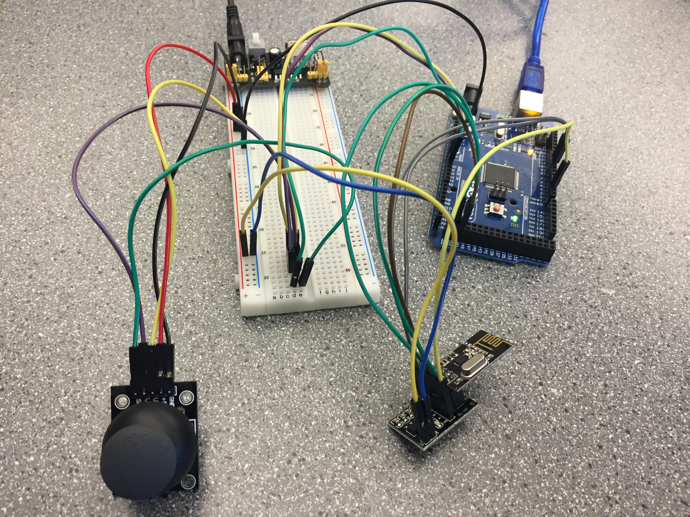
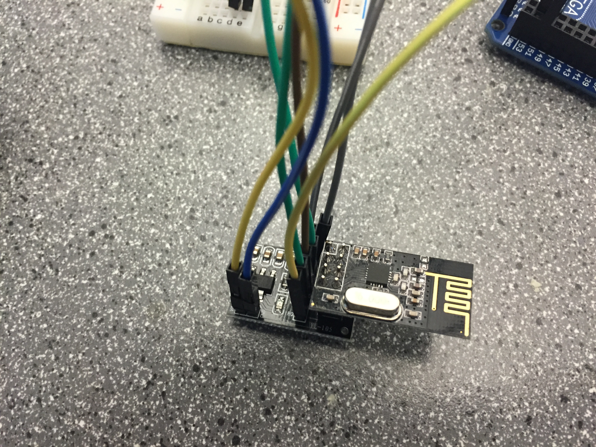

Project 1
The following section contains demonstrations and information on our progress for project 1.
Phase 2
Phase 2 involved reading values from a joystick and writing corresponding instructions to a Roomba robot.
Our phase 2 report can be found here
Photo Gallery
Wiring of system components and Arduino.
Close up of radio module.